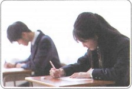
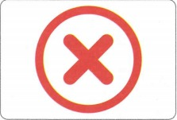
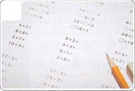
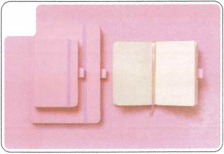
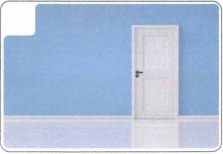
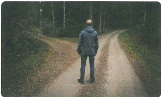
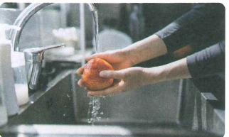
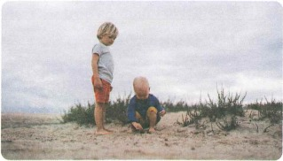
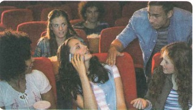

就要考试了
Sắp thi rồi
Học theo đúng thứ tự: từ vựng → nghe → bài khóa → ngữ pháp.
🔥 Khởi động
Chọn hình tương ứng: A 门 B 题 C 笑 D 错 E 考试 F 本子





Cùng hỏi và trả lời: 爷爷买了奶茶、咖啡和牛奶，你想喝什么？ · 商场有白色的裤子，也有黑色的裤子，你买哪条？ · 明天星期六，可以在家看电视，也可以去看电影，你想做什么？
📚 Từ vựng 1 · Học trước khi nghe
🎧 Nghe Bài khóa 1
（1）书包在哪儿？ A 床上 B 桌子上 C 门后面
（2）笔在哪儿？ A 床上 B 桌子上 C 门后面
💬 Bài khóa 1
（1）刘小明什么时候开学？
（2）刘小明准备好了吗？为什么？
🧠 Câu có cụm chủ vị làm vị ngữ
Cụm chủ vị có thể làm vị ngữ để giải thích hoặc miêu tả chủ ngữ.
我的书包你看见了吗？
弟弟手很小。
这件事他知道。
📚 Từ vựng 2 · Học trước khi nghe
🎧 Nghe Bài khóa 2
（1）刘小雪在做什么？ A 看书 B 考试 C 找本子
（2）做错的题在哪儿？ A 书上 B 本子上 C 书包里
💬 Bài khóa 2
（1）刘小雪明天要做什么？
（2）这些词的意思刘小雪都懂了吗？
🧠 Câu hỏi lựa chọn · 还是
Liên từ “还是” dùng trong câu nghi vấn để biểu thị sự lựa chọn.
妈妈，是您准备考试还是我准备考试？
你更喜欢打篮球、踢足球还是游泳？
我们什么时候去看电影？今天还是明天？
📚 Từ vựng 3 · Học trước khi nghe
🎧 Nghe Bài khóa 3
（1）刘小雪考试考得怎么样？ A 很不好 B 没上次好 C 比上次好
（2）王一雪正在做什么？ A 考试 B 做菜 C 洗手
💬 Bài khóa 3
（1）王一雪叫刘小雪做什么？
（2）孩子们洗完手了吗？
🧠 Cấu trúc “要/快/快要/就要……了”
Dùng để biểu thị một việc sắp xảy ra. Nếu trong câu có trạng ngữ chỉ thời gian thì thường dùng “就要……了”.
饭菜快要做好了。
火车快开了。
我们下星期就要考试了。
📚 Từ vựng 4 · Học trước khi nghe
🎧 Nghe Bài khóa 4
（1）刘小雪考试前，爸爸帮她准备考试。（ ）
（2）刘小雪和弟弟上学，爸爸、妈妈比他们还忙。（ ）
📖 Bài khóa 4
（1）爸爸为什么帮弟弟准备书包、本子和笔？ A 快要上课了 B 快要开学了 C 快要考试了
（2）爸爸、妈妈为什么笑了？ A 孩子们去上学了 B 孩子们考试考得很好 C 孩子上学，他们比孩子还忙
✏️ Bài tập tổng hợp
Chọn: A 后面 B 错 C 帮 D 考试 E 笑
（1）看到生日礼物，儿子高兴地 了。
（2）小雪，你们什么时候 ？你准备好了吗？
（3）我们公司 有一个商店，下班后我就去那儿买东西。
（4）不好意思，你能 我叫一下白家月吗？
（5）这个字写 了，左边是“口”，不是“日”。
🖼️ Nhìn tranh hoàn thành câu
Giữ đủ 4 tranh của giáo trình.

往左边走 往右边走？

我都 了。

下面 ，别玩了，我们回家吧。

电影 开始 ，你到哪儿了？
🎯 Tổng kết Bài 10
✓ Cụm chủ vị làm vị ngữ
✓ Câu hỏi lựa chọn với 还是
✓ 要 / 快 / 快要 / 就要……了
✓ Từ vựng và 4 bài khóa đã học theo thứ tự từ mới → nghe → bài khóa.